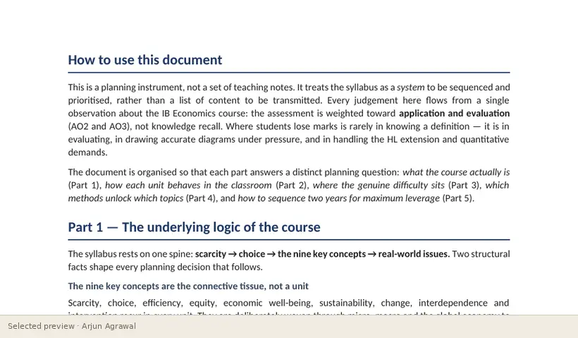
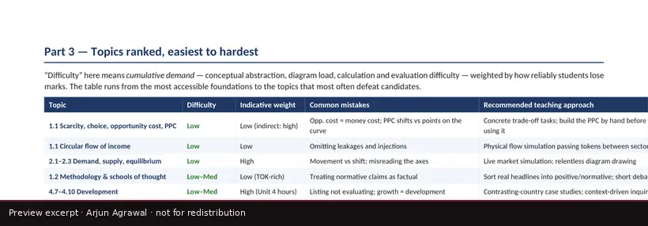

Home / Resource Studio / Curriculum Architecture and Strategic Teaching Roadmap
Guide for teachers · course planning
Curriculum Architecture and Strategic Teaching Roadmap
A planning instrument for teachers that treats the syllabus as a system to be sequenced: where the difficulty sits in each unit, the misconceptions to pre-empt, the evaluation traps, which teaching method suits which topic, and a two-year delivery plan.
- Type
- Guides
- Format
- Planning document: 11 pages
- Level
- SL and HL
- For
- Teachers, Heads of department, Coordinators
- Topics
- Teaching, Curriculum planning, Sequencing, Misconceptions


What it helps learners do
- See the course as one structure built on the key concepts, rather than a list of topics
- Rank topics by difficulty and plan time where it is needed
- Match a teaching method to each kind of topic
- Sequence two years so that the assessment skills are built continuously
The thinking behind it
It starts from how the course is assessed and plans backwards, so that analysis and evaluation are taught from the first term rather than added at the end.
What the complete resource contains
- Part 1: the underlying logic of the course
- Part 2: a curriculum map, unit by unit, with difficulties and misconceptions
- Part 3: topics ranked from easiest to hardest
- Part 4: matching the teaching method to the topic
- Part 5: a two-year strategic roadmap
Interested in exploring more?
This page shows a small selection of excerpts. The complete resource is not published online. If you are a teacher, a student or a school interested in it, please get in touch, and I will reply personally.
Ask about this resourceOpen it in the StudioOn the platform
Independent resources by Arjun Agrawal. They are not produced or endorsed by the International Baccalaureate Organization, and none of the questions shown is an IB examination question.